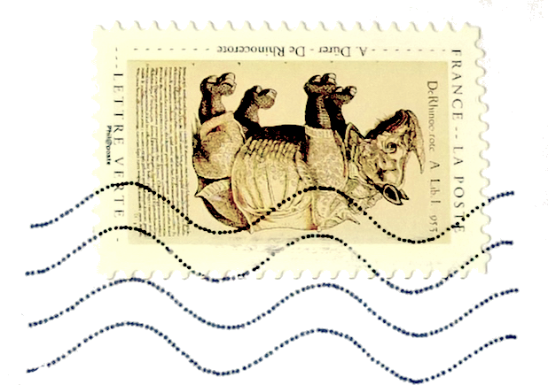

Principes de la cuisson en cocotte
Elle comprend 2 étapes :
1/ faire revenir la viande et les légumes
2/ faire mijoter longuement et à feux doux
Seule la première étape est délicate.
Avant de te servir de ta cocotte tu dois bien la laver avec du produit vaisselle, puis bien la rincer. J'espère que tu as choisi une cocotte de qualité. Alors l'étape que tu dois soigner avant de la ranger c'est le séchage : l'essuyer bien sec et même mettre entre le couvercle et le fond quand tu la ranges des petits tampons d'essuie-tout de manière à ce qu'elle ne rouille pas.
Pour faire revenir ta viande il te faut un corps gras. Le mieux c'est d'allier l'huile d'olive et le beurre (salé). Je dirais une petite cuillerée à soupe d'huile pour une petite cuillerée à café de beurre. Ce n'est pas la quantité qui importe mais la température: tu attends que l'ensemble soit fondu. Tu le fais chauffer en le surveillant. Il te faut trouver le moment ou c'est assez chaud sans être brulé pour mettre ta viande. Surveille les petites bulles qui se forment. Si tout va bien la viande doit chanter quand tu la plonges dans ta cocotte. Tu attends quelques minutes et tu la changes de côté. Elle doit devenir marron mais pas brûlée. Tu fais cela sur tous les côtés de ta viande. Quand elle est de tout les côtés beige et marron, c'est bien. Si elle est chocolat c'est que ton feu est trop fort.
Retire la viande sur une assiette et sans éteindre mais en ralentissant le feu, passe maintenant tes légumes coupés en morceaux, tranches ou petits bâtonnets dans la cocotte. En même temps, avec une cuillère en bois, tu les tournes et tu les retournes pour qu'ils s'imprègnent de cette bonne sauce (cinq minutes).
Après tu ajoutes à nouveau la viande. Si c'est pour la rôtir tu mets un filet d'eau (ou de vin et eau, ou même de l'alcool et eau). Si tu veux faire un ragoût tu fais de même mais tu recouvre d'eau ou de vin et eau.